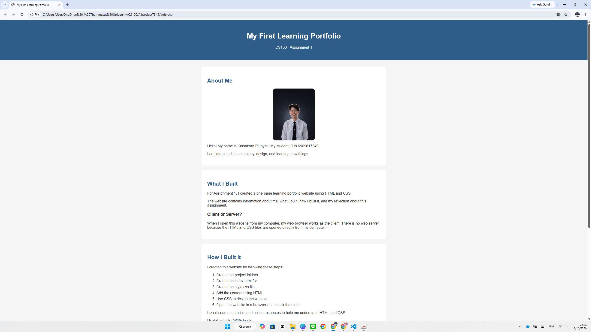
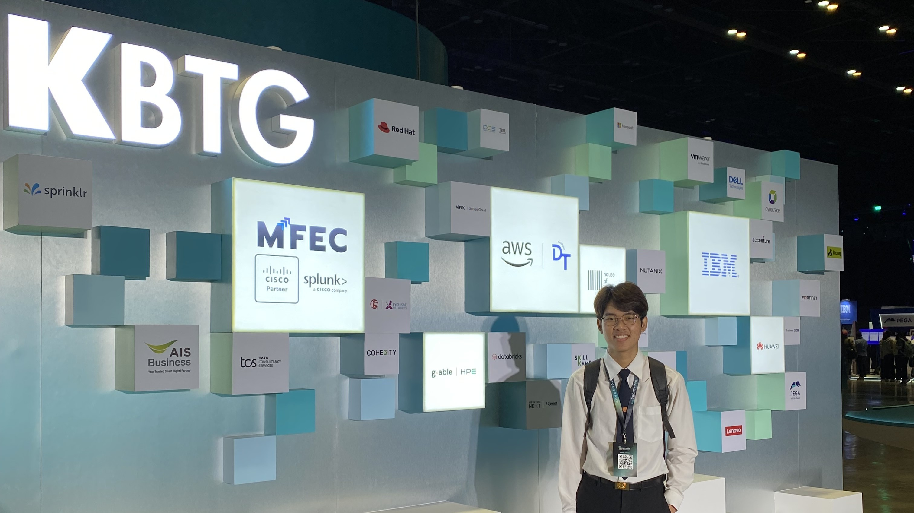

About Me
Hello! My name is Kritsakorn Pluaysri. My student ID is 6909617349.
I am interested in technology, design, and learning new things.
My Portfolio
CS100 A1 Project

Type: Course Assignment
Date: 30 August 2026
Role: Individual Developer
Description: I created a one-page learning portfolio using HTML and CSS.
Skills: HTML, CSS
Reflection
What I did: I created my first portfolio website.
What I learned: I learned how HTML and CSS work together.
Challenge: Understanding HTML and CSS was difficult at first, so I tested my code step by step.
Next step: I want to improve the design and make the website responsive.
Evidence: Project screenshot shown above.
KBTG Techtopia

Type: Activity
Date: 16 September 2026
Role: Participant
Description: I attended KBTG Techtopia to learn about technology and innovation.
Skills: Technology Awareness, Observation, Communication
Reflection
What I did: I attended the event and explored technology-related activities.
What I learned: I learned more about new technology and its real-world applications.
Challenge: Some topics were new to me, so I tried to understand them by listening and observing.
Next step: I want to learn more about technology and attend similar events.
Evidence: Event photo shown above.